먼저 생각해 보세요.
Der Müll wird getrennt. 이 문장에서 알 수 없는 것은 무엇인가요?
누가 하는지보다 무엇이 어떻게 되는지가 중요할 때 이렇게 말해요.
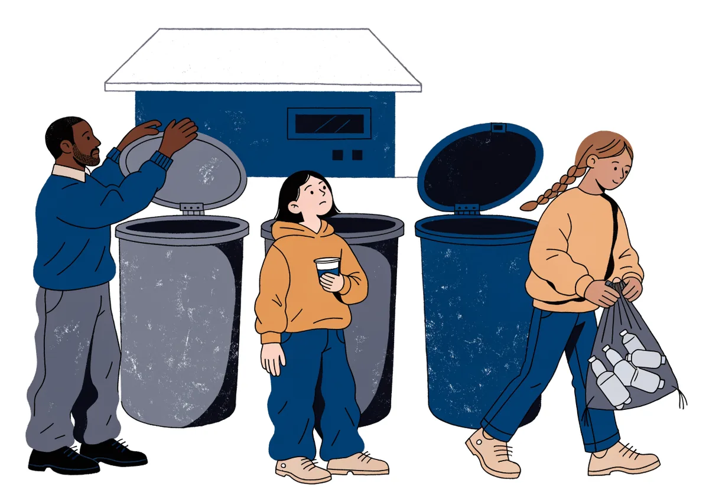
6월 하순이에요. Yuna는 쓰레기를 어느 통에 버려야 하는지 아직 헷갈려요. 학교에서는 내일 라인강 가에서 쓰레기를 줍는 환경의 날이 열려요. 날씨가 어떨지도 알아봐요.
눌러서 들어 보세요.
먼저 생각해 보세요.
Der Müll wird getrennt. 이 문장에서 알 수 없는 것은 무엇인가요?
누가 하는지보다 무엇이 어떻게 되는지가 중요할 때 이렇게 말해요.
Lektion 2의 낱말 다섯 개를 다시 떠올려 보세요.
문법 Passiv Präsens (Der Müll wird getrennt.), sollte
이 과를 마치면 환경을 위해 하는 일을 말하고, 조언하고, 일기 예보를 알아들을 수 있어요.
저녁을 먹고 Yuna가 부엌을 치워요.
들으면서 찾아보세요. 플라스틱은 무슨 색 통에 버리나요?
다음 날 학교예요. Frau Schneider가 내일 있을 환경의 날을 알려 줘요.
들으면서 찾아보세요. 내일 날씨는 어떤가요?
두 대화를 듣고 답하세요.
Wohin kommt der Joghurtbecher?
종이는 어느 통에 모으나요?
Für eine Plastikflasche bekommt man 25 Cent zurück.
Was macht Emma für die Umwelt?
Was macht die Klasse morgen?
Wie wird das Wetter morgen?
Die Schüler müssen Handschuhe mitbringen.
Handschuhe und Müllsäcke werden von der Stadt gebracht.
낱말 32개예요. 낱말이나 예문 앞의 단추를 누르면 소리가 나요. 명사는 der, die, das를 색으로 구분했어요.
die Umwelt 환경
Das ist gut für die Umwelt.그건 환경에 좋아요.
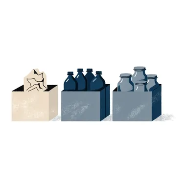
trennen, hat getrennt 나누다, 분리하다
Wir trennen den Müll.우리는 쓰레기를 분리해요.
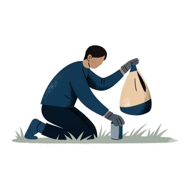
sammeln, hat gesammelt 모으다, 줍다
Die Klasse sammelt Müll am Rhein.반 학생들이 라인강 가에서 쓰레기를 주워요.
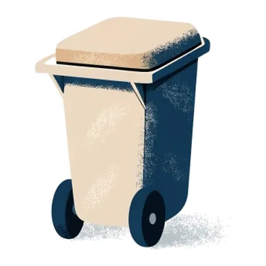
die Tonne, die Tonnen (큰) 쓰레기통
Die gelbe Tonne ist voll.노란 통이 가득 찼어요.
der Restmüll 일반 쓰레기
Das kommt in den Restmüll.그건 일반 쓰레기에 버려요.
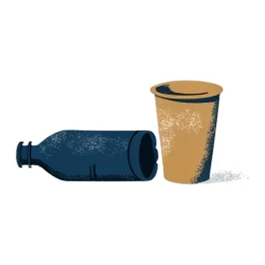
das Plastik 플라스틱
Die Flasche ist aus Plastik.그 병은 플라스틱으로 만들었어요.
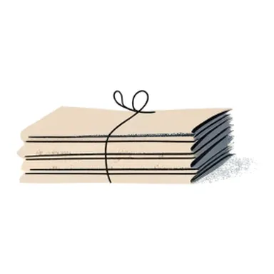
das Papier 종이
Papier kommt in die blaue Tonne.종이는 파란 통에 넣어요.
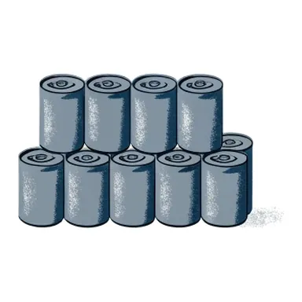
die Dose, die Dosen 캔, 깡통
Ich kaufe keine Dosen.나는 캔을 사지 않아요.
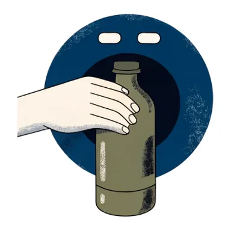
das Pfand 보증금
Für die Flasche gibt es Pfand.그 병에는 보증금이 있어요.
recyceln, hat recycelt 재활용하다
Glas kann man recyceln.유리는 재활용할 수 있어요.
wegwerfen (du wirfst weg, er wirft weg) 버리다
Wirf die Flasche nicht weg!그 병을 버리지 마!
sparen, hat gespart 아끼다, 모으다
Wir sparen Wasser.우리는 물을 아껴요.
der Strom 전기
Der Computer braucht Strom.컴퓨터는 전기가 필요해요.
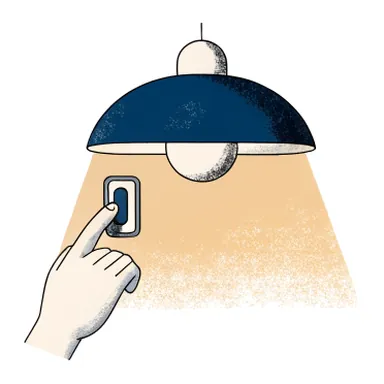
das Licht, die Lichter 불, 빛
Mach bitte das Licht aus.불 좀 꺼 줘.
der Wetterbericht, die Wetterberichte 일기 예보
Was sagt der Wetterbericht?일기 예보에서 뭐래요?
die Temperatur, die Temperaturen 기온
Die Temperatur ist hoch.기온이 높아요.
der Grad 도
Heute sind es 30 Grad.오늘은 30도예요.
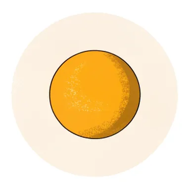
die Sonne 해
Die Sonne ist stark.햇볕이 강해요.
scheinen, hat geschienen 비치다
Die Sonne scheint.해가 비쳐요.
der Regen 비
Der Regen ist kalt.비가 차가워요.
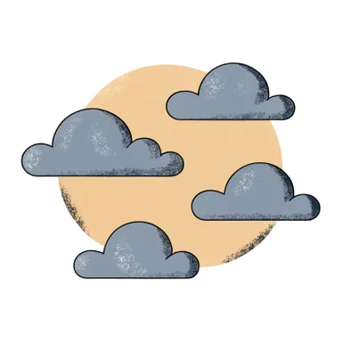
die Wolke, die Wolken 구름
Am Himmel sind viele Wolken.하늘에 구름이 많아요.
bewölkt 구름 낀, 흐린
Heute ist es bewölkt.오늘은 흐려요.
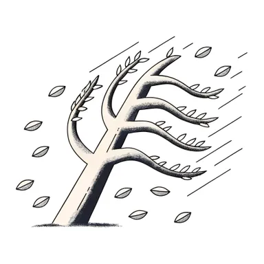
der Wind 바람
Der Wind kommt von Norden.바람이 북쪽에서 불어와요.
windig 바람 부는
An der Nordsee ist es oft windig.북해에는 바람이 자주 불어요.
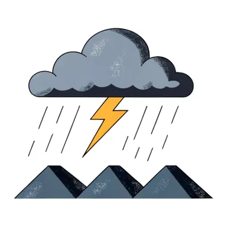
das Gewitter, die Gewitter 천둥 번개, 뇌우
Am Abend gibt es ein Gewitter.저녁에 천둥 번개가 쳐요.
trocken 비가 안 오는, 마른
Morgen bleibt es trocken.내일은 비가 안 와요.
Du solltest … ~하는 게 좋아
Du solltest mehr schlafen.잠을 더 자는 게 좋아.
mitbringen, hat mitgebracht 가져오다
Bringt bitte Wasser mit.물을 가져오세요.
der Handschuh, die Handschuhe 장갑
Im Winter trage ich Handschuhe.겨울에 나는 장갑을 껴요.
die Natur 자연
Ich bin gern in der Natur.나는 자연 속에 있는 걸 좋아해요.
schützen, hat geschützt 보호하다, 지키다
Wir müssen die Natur schützen.우리는 자연을 지켜야 해요.
wirklich 정말
Das ist wirklich wichtig.그건 정말 중요해요.
이 과의 낱말로 여덟 문제를 풀어요.
날씨 말은 명사와 형용사, 문장을 함께 외우면 쓰기 좋아요. 줄을 누르면 소리가 나요.
일기 예보에서는 어느 쪽 날씨인지 방향으로 말해요. '~쪽에서'는 im을 써요. 줄을 누르면 소리가 나요.
예문을 보고 답해 보세요.
Der Müll wird getrennt. 에서 과거분사 getrennt는 어디에 있나요?
규칙
누가 하는지보다 무엇이 어떻게 되는지가 중요할 때 Passiv를 써요. werden을 주어에 맞춰 둘째 자리에 두고, 과거분사를 맨 끝에 둬요. man 문장의 4격 목적어가 Passiv 문장의 주어가 돼요.
| man 문장 | Passiv 문장 |
|---|---|
| Man trennt den Müll. | Der Müll wird getrennt. |
| Man sammelt das Papier. | Das Papier wird gesammelt. |
| Man recycelt die Flaschen. | Die Flaschen werden recycelt. |
| Man macht das Licht aus. | Das Licht wird ausgemacht. |
주의 주어가 하나면 wird, 여럿이면 werden이에요. 누가 하는지 말하고 싶으면 von과 3격을 써요. Die Handschuhe werden von der Stadt gebracht.
예문을 보고 답해 보세요.
Du solltest …는 어떤 말인가요?
규칙
sollte는 '~하는 게 좋아' 하고 부드럽게 조언하는 말이에요. 다른 동사는 원형으로 맨 끝에 와요. Du musst …보다 훨씬 부드럽게 들려요.
| 주어 | sollte | 예문 |
|---|---|---|
| ich | sollte | Ich sollte mehr lernen. |
| du | solltest | Du solltest früher schlafen. |
| er, sie, es | sollte | Lukas sollte pünktlich kommen. |
| wir | sollten | Wir sollten Wasser sparen. |
| ihr | solltet | Ihr solltet eine Mütze mitnehmen. |
| sie, Sie | sollten | Sie sollten mit dem Bus fahren. |
주의 sollen은 다른 사람이 시킨 일을 전할 때 써요. Der Arzt sagt, ich soll viel trinken. sollte는 내가 하는 조언이에요. Du solltest viel trinken.
예문을 보고 답해 보세요.
Morgen wird es sonnig. 에서 wird는 어떤 뜻인가요?
규칙
앞으로의 날씨는 es wird와 형용사로 말해요. 명사로 말할 때는 es gibt를 써요. 비와 눈은 동사로 말해요. 기온은 Grad로 말해요.
| 말하는 방법 | 예문 |
|---|---|
| es wird + 형용사 | Morgen wird es windig. Am Wochenende wird es kalt. |
| es gibt + 명사 | Es gibt Regen. Es gibt ein Gewitter. |
| 동사 | Es regnet. Es schneit. Die Sonne scheint. |
| 기온 | Es sind 30 Grad. Die Temperatur liegt bei 15 Grad. |
주의 날씨를 말할 때 주어는 언제나 es예요. es를 빼고 말하지 않아요. Morgen regnet es.
라디오에서 일기 예보가 나와요. 듣고 답하세요.
Der Wetterbericht
Radio Und jetzt das Wetter für morgen.
Radio Im Norden ist es bewölkt und windig. An der Nordsee gibt es Regen. Die Temperatur liegt bei achtzehn Grad.
Radio Im Westen scheint die Sonne. In Köln wird es heiß, dreißig Grad.
Radio Am Nachmittag gibt es im Westen Gewitter.
Radio Im Süden bleibt es trocken und warm, fünfundzwanzig Grad.
Wie ist das Wetter im Norden?
Wie viel Grad sind es morgen in Köln?
Im Westen gibt es am Nachmittag Gewitter.
남쪽 날씨는 어떤가요?
듣고 알맞은 것을 고르세요.
Thomas는 왜 재킷을 가져가라고 하나요?
Du solltest eine Jacke mitnehmen. Am Abend wird es kalt.
유리는 노란 통에 버려도 되나요?
Glas wird nicht in die gelbe Tonne geworfen.
Elif의 학교에서는 무엇을 아끼나요?
In unserer Schule wird viel Papier gespart.
Lukas는 무엇을 타자고 하나요?
Wir sollten mit dem Rad fahren. Das ist besser für die Umwelt.
학교 게시판에 붙은 환경의 날 안내문이에요. 읽고 답하세요.
Umwelttag der Klasse 8b
Am Donnerstag sammeln wir Müll am Rhein. Wir treffen uns um acht Uhr an der Brücke.
Handschuhe und Müllsäcke werden von der Stadt gebracht.
Ihr solltet viel Wasser und eine Mütze mitbringen, weil es heiß wird.
Der Müll wird am Ende getrennt: Plastik, Glas und Restmüll.
Um zwölf Uhr sind wir fertig. Dann gibt es für alle ein Eis!
Wo trifft sich die Klasse?
Die Schüler müssen Müllsäcke kaufen.
Handschuhe und Müllsäcke werden von der Stadt gebracht.
Warum sollten die Schüler eine Mütze mitbringen?
쓰레기 줍기가 끝나면 무엇을 하나요?
Emma가 반 블로그에 환경을 위한 조언을 썼어요. 읽고 답하세요.
Fünf Tipps für die Umwelt
Tipp 1: Du solltest kurze Wege zu Fuß gehen oder mit dem Rad fahren.
Tipp 2: Mach das Licht aus, wenn du aus dem Zimmer gehst. So wird Strom gespart.
Tipp 3: Nimm eine Tasche mit, wenn du einkaufen gehst.
Tipp 4: Trink Wasser aus einer Flasche aus Glas. Sie wird viele Male benutzt.
Tipp 5: Wirf alte Kleidung nicht weg. Sie kann getauscht oder verkauft werden.
Wie spart man Strom?
Emma sagt, dass man kurze Wege mit dem Auto fahren sollte.
Du solltest kurze Wege zu Fuß gehen oder mit dem Rad fahren.
Was sollte man zum Einkaufen mitnehmen?
오래된 옷은 어떻게 하라고 하나요?
Passiv 문장이에요. wird와 werden 가운데 알맞은 것을 고르세요.
Der Müll getrennt.
Die Flaschen recycelt.
주어가 여럿이면 werden이에요.
Das Papier in der blauen Tonne gesammelt.
In der Schule viel Strom gespart.
Handschuhe und Müllsäcke von der Stadt gebracht.
알맞은 과거분사를 고르세요.
Der Müll wird .
Das Licht wird .
Plastik wird in der gelben Tonne .
Die Flaschen werden in den Supermarkt .
Hier wird Deutsch .
조언하는 말이에요. 알맞은 형태를 고르세요.
Du das Licht ausmachen.
Ihr viel Wasser mitbringen.
Wir früh anfangen.
Lukas pünktlich kommen.
Du solltest mehr Wasser .
다른 동사는 원형으로 맨 끝에 와요.
날씨를 말해요. 알맞은 말을 고르세요.
Morgen es sonnig und heiß.
내일은 맑고 더워져요.
앞으로 그렇게 된다는 뜻이라서 wird예요.
Am Nachmittag es ein Gewitter.
오후에 천둥 번개가 쳐요.
Die Sonne .
해가 비쳐요.
Heute sind es 30 .
오늘은 30도예요.
Im Norden ist es .
북쪽은 바람이 불어요.
낱말을 순서대로 눌러 문장을 만드세요.
쓰레기는 분리해요.
종이는 파란 통에 모아요.
불을 끄는 게 좋아.
내일은 맑아져요.
낱말과 뜻을 짝지으세요.
듣고 그대로 써 보세요.
Bei uns wird der Müll getrennt. 우리 집에서는 쓰레기를 분리해.
Wie wird das Wetter? 날씨는 어떻대요?
Sollten wir Handschuhe mitbringen? 장갑을 가져오는 게 좋을까요?
Ich fahre mit dem Rad zur Schule. 나는 자전거로 학교에 가.
Wir trennen den Müll. 우리는 쓰레기를 분리해.
Ich mache das Licht aus. 나는 불을 꺼.
Ich spare Wasser. 나는 물을 아껴.
Du solltest … ~하는 게 좋아.
Wir sollten früh anfangen. 우리는 일찍 시작하는 게 좋겠어.
Das ist besser für die Umwelt. 그게 환경에 더 좋아.
Wohin kommt die Flasche? 병은 어디에 버려?
Plastik kommt in die gelbe Tonne. 플라스틱은 노란 통에 넣어.
Für die Flasche gibt es Pfand. 그 병에는 보증금이 있어.
Wie wird das Wetter? 날씨가 어떻대?
Morgen wird es sonnig. 내일은 맑아져.
Es gibt ein Gewitter. 천둥 번개가 쳐.
Es sind 30 Grad. 30도야.
대화 A에서 역할을 하나 고르세요. 상대의 말은 음성으로 나오고, 내 차례에는 직접 말해요.
내가 환경을 위해 하는 일과 앞으로 하면 좋을 일을 적으세요. 완성된 문장을 소리 내어 읽어 보세요.
Ich fahre mit dem Rad zur Schule.
Bei uns werden Papier und Plastik getrennt.
Ich sollte weniger Plastik benutzen.
Mein Umwelt-Tipp
반 친구들에게 환경을 위한 조언 세 가지를 써 보세요. 여섯 문장쯤 써요.
Für die Umwelt fahre ich jeden Tag mit dem Rad zur Schule. Du solltest das auch machen, weil es gesund ist. Du solltest keine Plastikflaschen kaufen. Und du solltest das Licht ausmachen, wenn du aus dem Zimmer gehst. In unserer Schule wird der Müll getrennt. Papier wird in der blauen Tonne gesammelt.
다 쓴 뒤에 확인해 보세요.
Ich kann sagen, was ich für die Umwelt mache.환경을 위해 무엇을 하는지 말할 수 있어요.
Ich kann Tipps geben.조언할 수 있어요.
Ich kann einen Wetterbericht verstehen.일기 예보를 알아들을 수 있어요.